| فاصله (متر) | تا 40 | تا 200 | تا 400 | تا 800 | تا 1200 | تا 1800 | تا 2500 | تا 4200 | تا 6300 | تا 8400 | تا 11000 | تا 15000 | تا 20000 |
|---|---|---|---|---|---|---|---|---|---|---|---|---|---|
| امتیاز | 1 | 1.5 | 2 | 2.5 | 3 | 3.5 | 4 | 5 | 6 | 7 | 8 | 9 | 10 |
| فرغون و چرخ دستی تک محور | فقط چرخهای گردان | با چرخهای غیرگردان یا چرخهای گردان قفل شونده | با فرمان دستی | کانوایر هوایی | جرثقیل سقفی | ||||
|---|---|---|---|---|---|---|---|---|---|
| 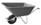 | 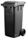 | 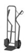 | 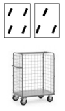 | 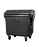 | 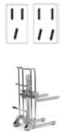 | 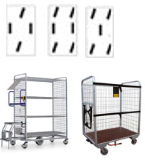 | 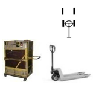 | 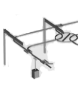 | 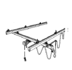 |
| شرایط مسیر | 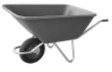 | 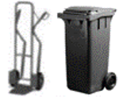 | سایر تجهیزات چرخ دار |
|---|---|---|---|
| مسیر صاف، هموار، محکم، خشک و بدون شیب | 0 | 0 | 0 |
| مسیر عمدتاً صاف و هموار با نقاط آسیبدیده یا ایرادات جزئی و بدون شیب | 0 | 0 | 1 |
| ترکیبی از سنگفرش، بتن، آسفالت، شیب کم و برآمدگیها | 0 | 1 | 2 |
| ترکیبی از سنگفرش نامرتب، ماسه سفت، شیب کم، لبهها/موانع کوچک | 1 | 2 | 3 |
| مسیر خاکی یا سنگفرش ناهموار، با چالهچوله، آلودگی زیاد، شیب کم، برآمدگیها و موانع برجسته | 3 | 5 | 6 |
| شرایط شیب/پله | امتیاز |
|---|---|
| بدون شیب/پله | 0 |
| شیبهای ملایم: از ۲ تا ۴ درجه (۴ تا ۸ درصد) | 5 |
| شیبهای متوسط: از ۵ تا ۱۰ درجه (۹ تا ۱۸ درصد) | 10 |
| پلهها: شیبهای تندتر از ۱۰ درجه (بیش از ۱۸ درصد) | 25 |
| شرط | امتیاز |
|---|---|
| شروع حرکت نیاز به تلاش بیشتری دارد (گیر کردن یا فرو رفتن وسیله) | 3 |
| توقفهای مکرر: بدون ترمزگیری | 1 |
| توقفهای مکرر: با ترمزگیری | 3 |
| تغییر مسیر یا پیچهای متعدد، مانورهای مکرر | 3 |
| نیاز به دقت بیشتر برای قرار دادن و توقف بار، رعایت دقیق مسیر حرکت | 1 |
| حرکت با سرعت بالاتر از معمول (۱.۰ تا ۱.۳ متر بر ثانیه) | 2 |
| هیچکدام: هیچ یک از شرایط نامطلوب وجود ندارد | 0 |
| ویژگی نامطلوب | امتیاز |
|---|---|
| عدم وجود دستگیره یا نقاط مناسب برای اعمال نیرو | 2 |
| عدم وجود ترمز در شیبهای بیش از ۲ درجه (بیش از ۳ درصد) | 3 |
| چرخهای نامناسب یا تنظیم نشده (مثلاً خیلی کوچک برای سطوح نرم یا ناهموار) | 2 |
| چرخهای معیوب (فرسوده، ساییده، سفت، کم باد) | 2 |
| هیچکدام: هیچ یک از ویژگیهای نامطلوب مشاهده نمیشود | 0 |
| تصویر پوسچر | توضیحات | امتیاز |
|---|---|---|
| 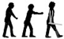 | بالاتنه صاف یا کمی به جلو متمایل، بدون پیچش ارتفاع اعمال نیرو به صورت دلخواه قابل انتخاب است. هیچ گونه مانعی برای حرکت پاها وجود ندارد. |
3 |
| 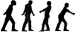 | بالاتنه به سمت جهت حرکت متمایل است یا هنگام کشیدن بار از یک طرف، پیچش کمی وجود دارد. ارتفاع اعمال نیرو ثابت و در محدوده 0.9 تا 1.2 متر است. تعداد موانع کم است یا هیچ مانعی برای حرکت پاها وجود ندارد. عمدتاً عمل کشیدن بار انجام میشود. |
5 |
| 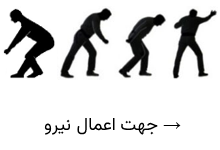 | پوسچرهای نامطلوب بدن ناشی از: - ارتفاع ثابت اعمال نیرو کمتر از 0.9 متر یا بیشتر از 1.2 متر - اعمال نیرو از پهلو در یک طرف - دید به طور قابل توجهی محدود شده است. - وجود موانع زیاد برای حرکت پاها - پیچش مکرر/مداوم و/یا خمش جانبی قابل مشاهده در بالاتنه |
8 |
| وضعیت | امتیاز |
|---|---|
| مطلوب: تنوع زیاد فعالیتهای فیزیکی در طول شیفت کاری به دلیل انجام فعالیتهایی مختلف... | 0 |
| محدود: تنوع کم در فعالیتهای فیزیکی. همچنین، گاهی ممکن است فعالیتهای سنگین کوتاهمدت با ماهیت تکراری وجود داشته باشد. | 2 |
| نامطلوب: تنوع کم در فعالیتهای فیزیکی. همچنین، در طول شیفت، فعالیتهای سنگین، فشرده و تکراری با ماهیت یکسان انجام میشود که گاهی با افزایش ناگهانی شدت یا مدت کار همراه است. | 4 |
| وزن بار / وسیله حمل و نقل | — |
| شرایط مسیر حرکت + شیب/پله | — |
| شرایط نامطلوب کار (Σ) | — |
| ویژگیهای نامطلوب وسیله حمل و نقل (Σ) | — |
| پوسچر بدن | — |
| تنوع و تکرار وظایف | — |
| مجموع امتیاز شاخص (جمع ۶ مورد بالا) | — |
| امتیاز زمان (ضریب) | — |
| امتیاز نهایی فعالیت فرعی | — |
| ریسک | سطح ریسک | شدت بار | الف) احتمال اضافه بار فیزیکی ب) پیامدهای احتمالی برای سلامتی | اقدامات |
|---|---|---|---|---|
| 1 | کمتر از 20 | پایین | الف) احتمال اضافه بار فیزیکی کم است. ب) هیچ خطری برای سلامتی پیشبینی نمیشود. | نیازی نیست. |
| 2 | بین 20 تا کمتر از 50 | کمی افزایش یافته | الف) احتمال اضافه بار فیزیکی برای افراد کمتحمل وجود دارد. ب) خستگی و اختلال سازگاری با شدت کم که در زمان فراغت جبران میشود. | بازطراحی و اقدامات پیشگیرانه ممکن است مفید باشد. |
| 3 | بین 50 تا کمتر از 100 | بهطور چشمگیری افزایش یافته | الف) اضافه بار فیزیکی حتی برای افراد با تحمل متوسط نیز ممکن است رخ دهد. ب) اختلالات (معمولاً همراه با درد) که ممکن است شامل اختلال عملکرد اندامها باشد، در اکثر موارد موقتی هستند. | بازطراحی و اقدامات پیشگیرانه باید بررسی شوند. |
| 4 | برابر یا بیشتر از 100 | بالا | الف) احتمال اضافه بار فیزیکی بالاست. ب) آسیبهای ساختاری قابل توجه با عواقب بیماریزا و اختلال عملکردی شدید. | بازطراحی الزامی است و اقدامات پیشگیرانه باید مدنظر قرار گیرند. |